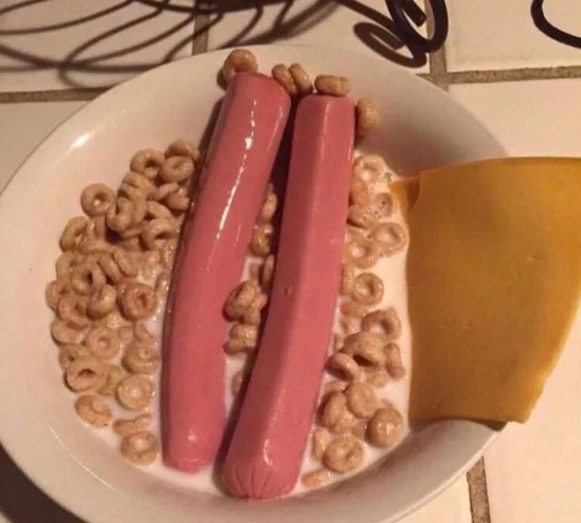

Hot Dog Cereal

World wide sensational cereal. Sold out in most stores!
This cereal is truly one of a kind. It is a hot seller with over 2 billion dollars in sales.
Here we are going to learn how to make it at home
Ingredients
- Your favorite bland cereal
- 2 hot dogs
- 1 slice of cheese
- Milk
Instructions
- Put cereal first in a bowl (If you choose to put milk first you should in incarcerated)
- Add milk to the bowl of cereal to your preferred amount
- Add your uncooked hot dogs in the middle of the bowl
- Add the slice of cheese to the side as a garnish
- Enjoy!!
Back to Main Page